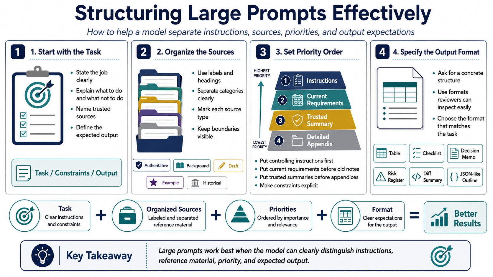

Structuring Large Prompts
Connecting to LMS... Progress: in progress

Narration
Large prompts need structure because the model has to distinguish task instructions from reference material. Start with a clear task statement. Explain what the model should do, what it should not do, what sources it should rely on, and what output format is expected. When many documents are included, the first section should help the model understand the job before it sees the raw material.
Source organization is critical. Use labels, headings, delimiters, and consistent section names. Identify where each excerpt came from and whether it is authoritative, background, draft, example, or historical. If a prompt contains policy text, implementation notes, and user preferences, those categories should not be blended together. Clear boundaries reduce ambiguity.
Priority ordering helps when material conflicts. Put controlling instructions before examples. Put current requirements before old notes. Put summaries before detailed appendices when the summary is trusted. Make constraints explicit: required tone, excluded topics, citation expectations, formatting rules, and assumptions that should be preserved. The model should not have to infer which source has priority.
Requested output format should be specific. A large context prompt can ask for a table, decision memo, checklist, diff summary, risk register, or structured JSON-like outline. Specific formatting reduces wandering and helps reviewers inspect the result. The more material you include, the more helpful it is to tell the model exactly how to use that material.